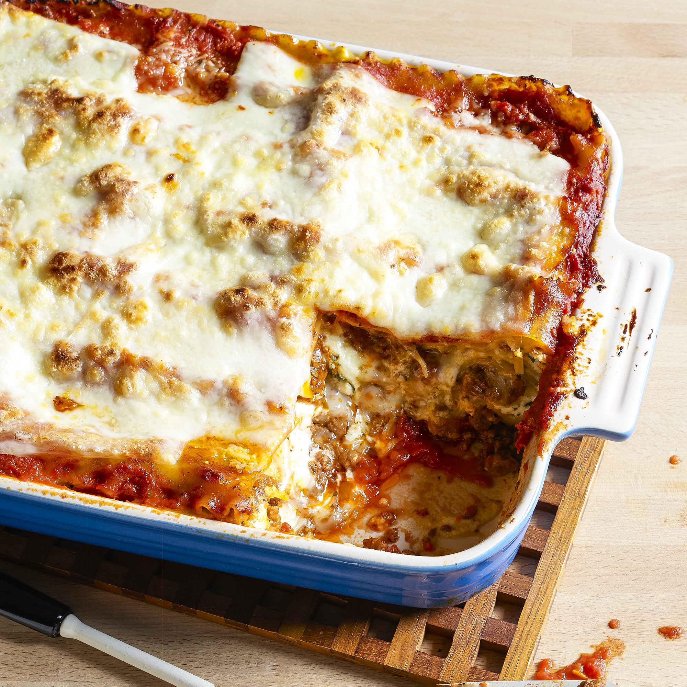

Lasagna

Description
This is my family's lasagna recipe using half sweet italian sausage and half lean ground beef. Best lasagna ever!
Ingredients
- 1 pound sweet italian sausage
- 1 pound lean ground beed
- 1 vidalia onion, minced
- 4 cloves garlic, crushed
- 1 28 oz can crushed tomatoes
- 2 6 oz cans tomato paste
- 2 6.5 oz cans tomato sauce
- 1/2 cup water
- 2 Tbsp white sugar
- 1 1/2 tsp dried basil
- 1 Tbsp italian seasoning
- 2 tsp salt, divided/to taste
- 1/2 tsp black pepper
- 4 Tbsp fresh chopped parsley
- oven ready lasagna noodles
- 16 oz ricotta
- 1 egg
- 3/4 pound sliced mozzarella
- 3/4 cup fresh grated parmesan
Steps
- In a dutch oven, cook the sausage, ground beef, onion, and garlic over medium until well browned. Stir in the crushed tomatoes, tomato paste, tomato sauce, and water. Season with sugar, basil, italian seasoning, 1 tsp salt, pepper, and 2 Tbsp parsley. Simmer, covered, for 1 1/2 hours, stirring occasionally.
- Meanwhile, preheat oven to 375 degrees F.
- Mix ricotta with egg, remaining parsley, and 1 tsp of salt.
- Assemble the lasagna. Spread meat sauce on bottom of a 9x13 baking dish. Arrange a layer of noodles, then half of the ricotta mixture, then a third of the mozzarella slices. Spoon another layer of meat sauce ontop and sprinkle with parmesan. Repeat layers and top with the remaining mozzarella and parmesan. Cover with sprayed foil.
- Back for 25 minutes, remove foil and bake an additional 25 minutes. Let cool for 15 minutes before serving.